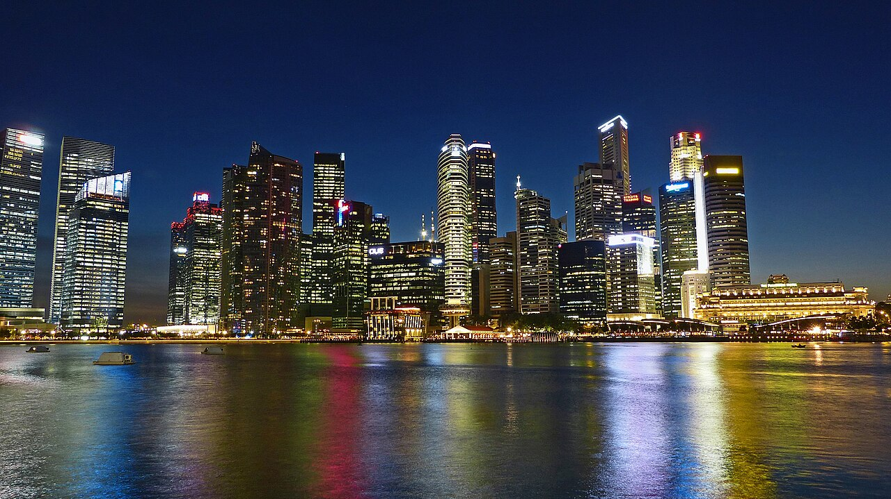
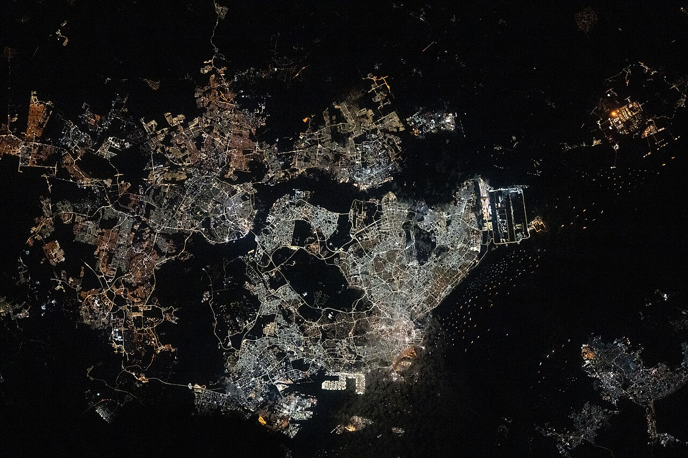
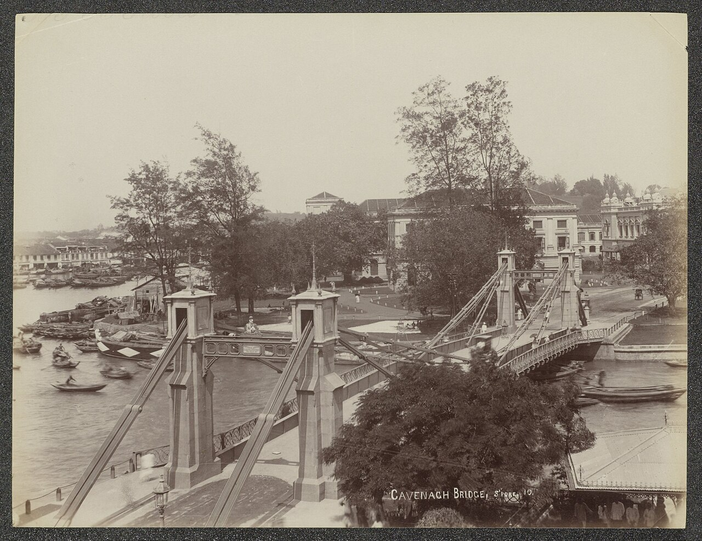
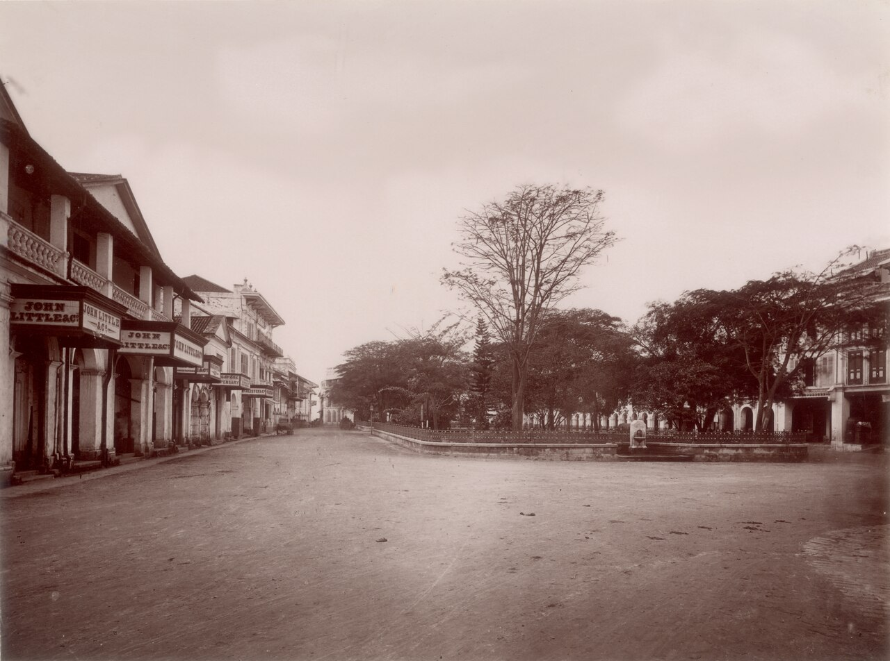
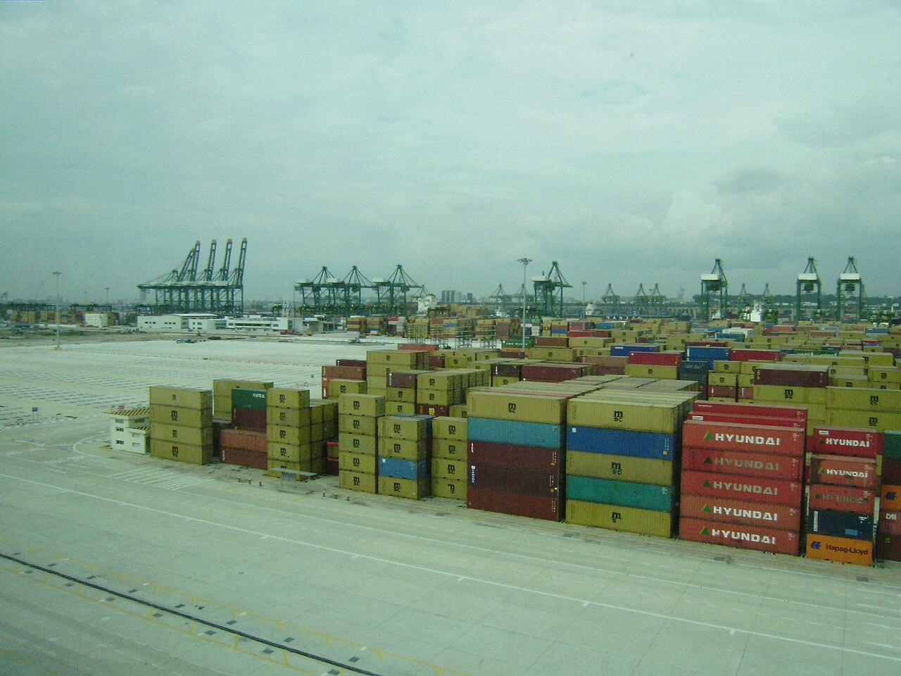
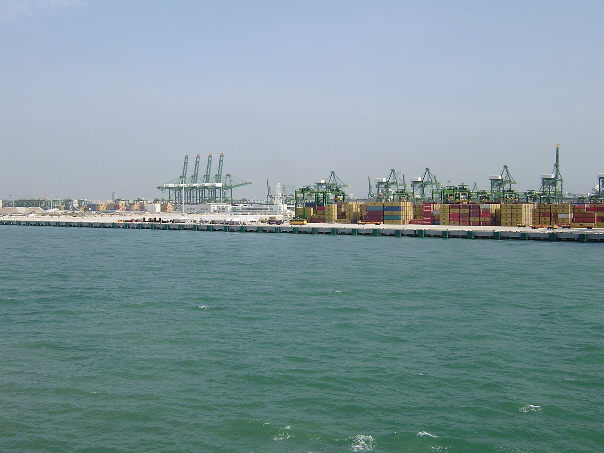
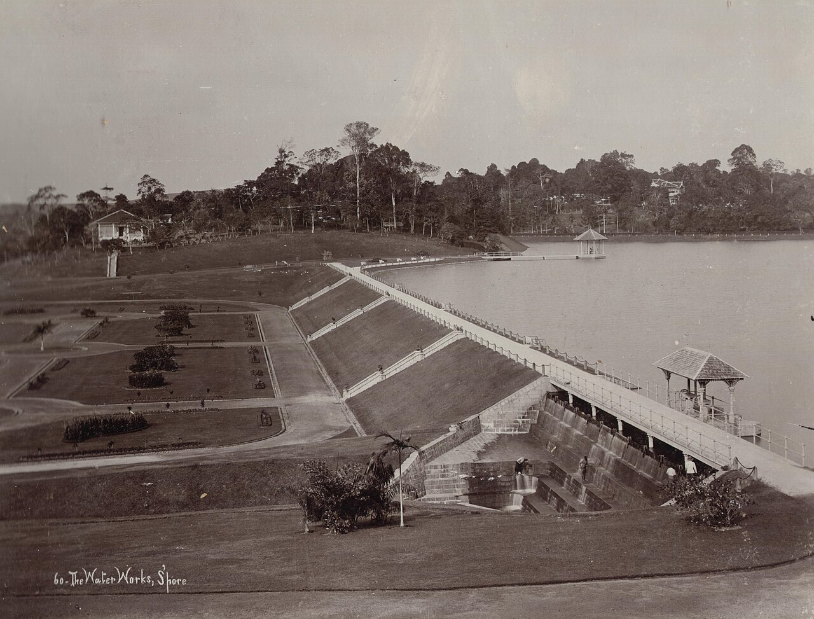
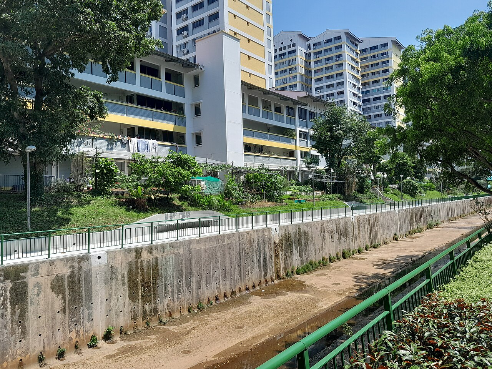

歴史・地理 History & Geographyシンガポールは、なぜ豊かな国になった？
東京23区ほどの小さな島で、石油や鉱石もなく、水さえ自分たちだけでは足りない。それでも2024年の1人あたりの豊かさは、日本の約2.8倍です。海の地図と60年のグラフで、その理由をのぞいてみませんか。
2026.10.21 UP 約5分で読める 文：SOMOSOMO編集部
写真：Skyline of the Central Business District of Singapore／Jason Goh（2014年、CC0）
シンガポールがマレーシアから分かれ、ひとつの国として独立したのは、1965年8月9日のことです。いまの広さは約740km²と、東京23区（約628km²）より少し大きいくらい。天然資源はほとんどなく、生活に使う水の一部は、いまもお隣のマレーシアから買っています。
それから60年。国の豊かさをはかる目安「1人あたりGDP」は、2024年に約9万5000ドル。日本の約3万4000ドルの2.8倍ほどです。GDPは、国の中で1年に生み出された価値の合計のこと。それを人の数で割ったのが1人あたりGDPです。小さくて資源もない国が、なぜここまで豊かになれたのでしょうか。
In a word
海の交差点 という場所を生かし、世界の会社と船を呼びこむ 国づくりを続けてきたことが大きいとされる。
01
Crossroads of the Sea
海の交差点に、港をつくった
シンガポールは、マレー半島のいちばん南の先にある島です。西にはインド洋、東には南シナ海。そのあいだを結ぶ細い海の道「マラッカ海峡」の出口に、ちょうどふたをするような位置にあります。ヨーロッパや中東とアジアの東側を行き来する船の多くが、このあたりを通ります。
1819年1月、イギリス東インド会社（アジアとの貿易を任されたイギリスの会社）のトーマス・スタンフォード・ラッフルズがこの島に着き、翌月、地元を治めていたスルタンらと条約を結んで、交易の拠点を開く許しを得ました。船が必ず通る場所に、港をつくる。 シンガポールの歴史は、ここから始まります。
Fig.01 マラッカ海峡の出口にある島
シンガポール
マレー半島
スマトラ島
ボルネオ島
マラッカ海峡
インド洋へ
（ヨーロッパ・中東）
南シナ海へ
（中国・日本）
見どころは赤い点線。インド洋と南シナ海を行き来する船の道が、ちょうどシンガポールの前を通ります。位置関係を示した模式図で、形や大きさは正確ではありません。

島じゅうが、街の明かり 国際宇宙ステーションから見た夜のシンガポール。細い海峡をはさんで、北側にはマレーシアのジョホールバルの街があります。写真：Singapore separated from Johor Bahru, Malaysia ／NASA Johnson Space Center（2025年、パブリックドメイン）


150年前の港町 左は1870〜1900年ごろのシンガポール川とカヴェナ橋。右は1890年ごろのラッフルズ・プレイス。いまは高層ビルが立ち並ぶあたりです。写真：Cavenagh Bridge, Singapore ／アムステルダム国立美術館所蔵（1870〜1900年ごろ、CC0）、Raffles Place, Singapore ／撮影者不明（1890年ごろ、パブリックドメイン）
02
Invite the World
資源がないなら、世界の会社を呼べばいい
シンガポールには、売れる資源がありません。そこで力を入れたのが、外国の会社に来てもらうことでした。独立より前の1961年8月には、外国からの投資を呼びこむための政府の機関「経済開発庁（EDB）」がつくられています。安定した政治と、会社が仕事をしやすい環境が、外国の会社や銀行を引きつけたとされています。
1968年には、アメリカの半導体（コンピューターの頭脳になる部品）メーカー、テキサス・インスツルメンツとナショナル・セミコンダクターが工場を開きました。独立から1973年までの経済の成長は、平均で年12.7%に達します。
外国からの投資はその後も大きく増え、2001年には、国内でつくられる工業製品の75%を外国の会社が生み出す までになりました。
Fig.02 1人あたりGDPの移り変わり（ドル）
見どころは右の端。独立した年の517ドルから、約180倍になりました。物の値段の上がり分を差し引いていない、その年のドルでの値です。世界銀行のデータによります。
Fig.03 1人あたりGDP、シンガポールと日本（2024年）
シンガポール 94,897ドル
日本 33,797ドル
見どころは2本の長さの差。ドルに直した値なので、円安・円高でも差は変わります。世界銀行のデータによります。
呼びこんだのは会社だけではありません。港には、世界中の船が集まり続けました。2024年、シンガポールの港で扱ったコンテナ（貨物を入れる大きな鉄の箱）は、箱の大きさをそろえて数えると4112万個。過去最多です。そのおよそ9割は、ここで別の船に積みかえて、ほかの国へ運ばれていく荷物です。荷物そのものは通り過ぎても、積みかえの作業や、船への燃料や食料の補給といった仕事が港に残ります。


船から船へ、荷物を乗りかえる港 シンガポールのパシルパンジャン・コンテナターミナル。大きなクレーンで、コンテナを船から船へと積みかえます。写真：Pasir Panjang Terminal 1 、Pasir Panjang Terminal from the sea ／Rifleman 82（2007年、パブリックドメイン）
03
Four Taps
水も、自分たちで確保する
資源がないことのいちばんの悩みは、水でした。雨は多くても、小さな島にはためておく場所が限られます。そこでシンガポールは、水の入手先を4つに分け、「4つの蛇口」と呼んでいます。
雨をためる 島の各地に貯水池をつくり、降った雨を集めてためます。
マレーシアから買う 1962年の協定で、2061年まで原水（処理する前の水）を買うことができます。値段は1000ガロン（約4500リットル）あたり3セン（マレーシアの通貨）。1立方メートル（お風呂5杯分ほど）あたり0.2米セントほどという、とても安い値段で決められています。
下水をきれいにして使う 使った水を高度に処理した「NEWater（ニューウォーター）」。2017年の政府の説明では、需要の最大4割をまかなえる設備があります。
海水を真水にする 海水から塩を取りのぞく工場。工場が増え、需要の最大2.5〜3割をまかなえるようになっています。
マレーシアとの協定が切れる2061年までに、自分たちの蛇口を太くしておく。水のような暮らしと産業の土台を、ひとつの国にたよりきらずに確保することも、資源のない国が自分の足で立つための工夫です。

100年以上前から、水をためてきた 1900年ごろのシンガポールの貯水池。雨をためる「1つ目の蛇口」は、昔からの工夫です。写真：Water reservoirs in Singapore ／G.R. Lambert & Co.（1900年ごろ、パブリックドメイン）
04
By the Numbers
60年で、約180倍
約180倍 1人あたりGDPの、1965年から2024年までの伸び（517ドル→94,897ドル）世界銀行
約610万人 東京23区より少し大きい島に暮らす人の数2025年の推計
約8割 住民のうち、公営住宅（HDB）に住む人の割合2025年

住民の約8割が住む「HDB」 1960年にできた住宅開発庁（HDB）の建てた集合住宅。狭い国土に600万人以上が暮らせるよう、国が高層の住宅を島じゅうに建ててきました。写真：HDB flats and canal near Segar LRT station ／Teojincheng（2023年、CC0）
Here's the Fun Part
ここが面白い！
水だけではありません。シンガポールは、土地まで自分たちでつくってきました。海を埋め立てて陸地を広げ、独立した1965年から、国土を22%も増やしている のです。空港や工業地帯にも、海を埋め立ててつくった場所が少なくないといわれます。
埋め立てはいまも続き、さらに国土を広げる計画も進んでいます。資源がない、土地も水も足りない。だからこそ、足りないものを外から呼びこみ、あるいは自分でつくってきた。その積み重ねが、いまの豊かさを支える柱のひとつになっています。
次に地図アプリでシンガポールを見るときは、海岸線に注目してみてください。定規で引いたようにまっすぐな岸があれば、そこはたぶん、人の手で広げた土地です。